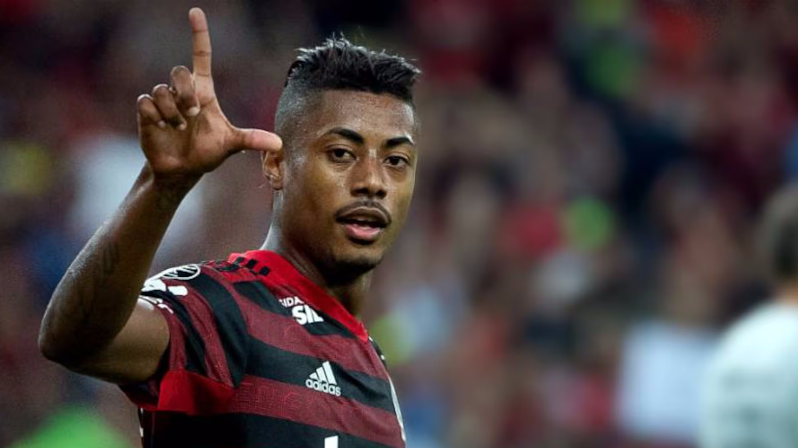
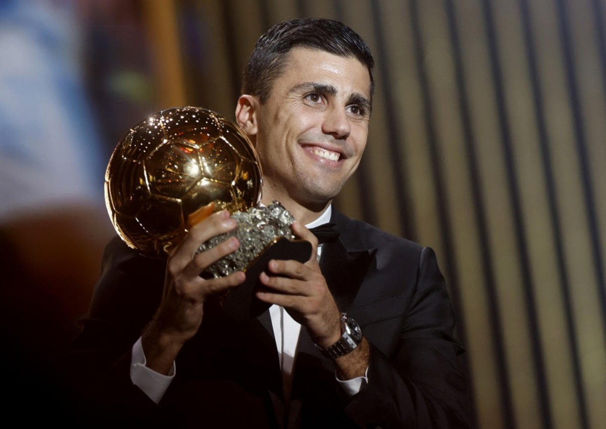

West Ham sinaliza com oferta de R$ 225 milhões pelo atacante Igor Jesus, do Botafogo
03/11/24 às 11:26
Atleta Bruno Henrique é alvo de operação policial após indicios de manipulação de resultados (Xiiiii)
03/11/24 às 11:26


A espera do Brasil continua. Depois de 64 anos, um espanhol é coroado como o melhor jogador do mundo. O meio-campista Rodri, do Manchester City, desbancou o favorito Vinicius Junior e ganhou a Bola de Ouro de 2024. O campeão da Euro pela Espanha, de 28 anos, é o vencedor na primeira edição com parceria da Uefa e a revista France Football, organizadora do evento.
O Brasil segue sem um vencedor na premiação depois de 17 anos. Vini Jr., no entanto, obteve a melhor posição de um jogador brasileiro desde que Kaká foi coroado, em 2007. Antes do atacante do Real Madrid, o melhor desempenho no período foi de Neymar, terceiro colocado em 2015 e 2017.
Rodri é o terceiro espanhol a ganhar a Bola de Ouro. Antes, apenas o argentino naturalizado espanhol, Di Stéfano (1957 e 1959) e Luis Suárez (1960) haviam vencido a premiação, em uma época na qual apenas europeus concorriam.
Em seu discurso, Rodri citou outros ídolos da Espanha e disse que sua coroação é uma vitória do futebol do país. Ele reiterou que o prêmio é uma forma de reconhecer a importância de outras posições em campo.